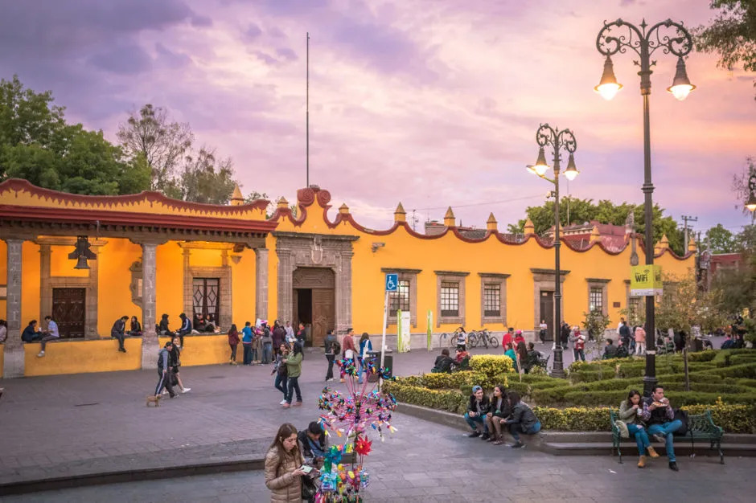

Recoridos turísticos "MICTLAN"
Coyoacán está formado por barrios y pueblos originarios, todos ellos tienen, desde sus inicios una importante tradición agrícola, pesquera y de recolección. La cocina tradicional, aun vigente, es herencia de esta sabiduría que se vio beneficiada por el legado de la cocina conventual, la introducción de huertos, la ganadería y la crianza de animales de traspatio.
